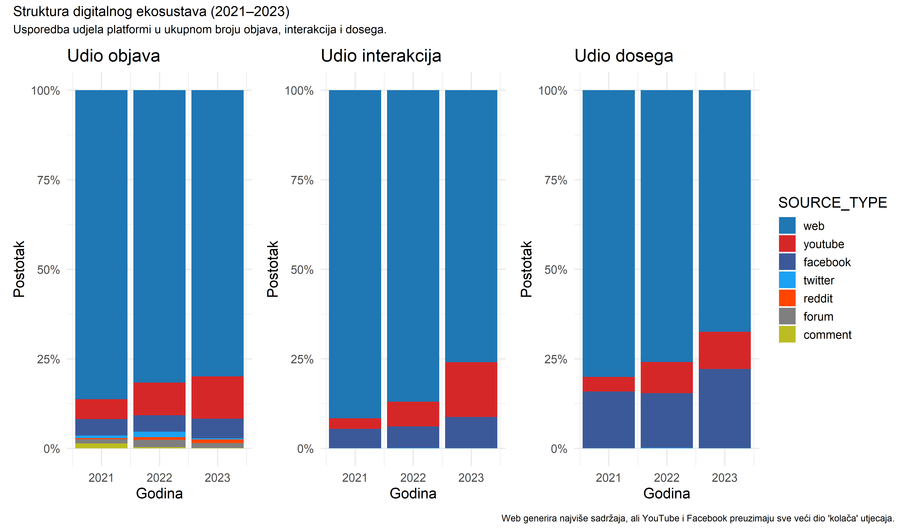
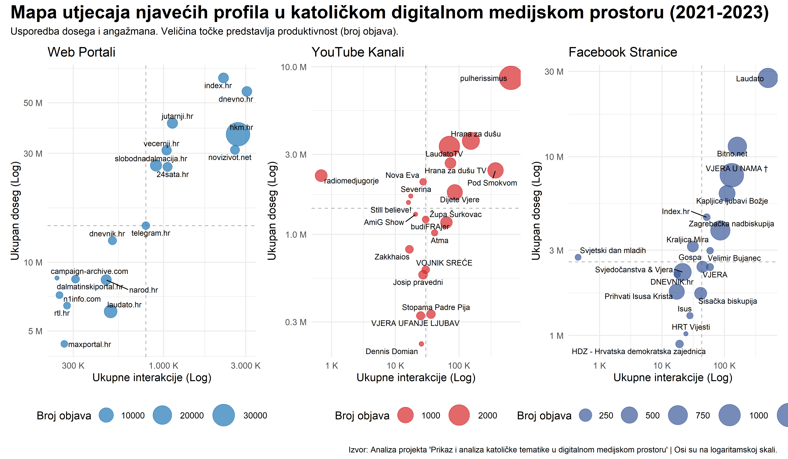

Mapa katoličkog digitalnog prostora u RH (2021-2023)
22. srpnja 2025.
knitr::opts_chunk$set(echo = FALSE, message = FALSE, warning = FALSE, fig.width = 12, fig.height = 7, dpi = 200)Uvod: Mapiranje digitalne medijske arene
Ovaj dokument predstavlja prvu fazu analize u sklopu projekta “Prikaz i analiza katoličke tematike u digitalnom medijskom prostoru”. Cilj ove analize je stvoriti sveobuhvatnu i jasnu mapu ekosustava – temeljni pregled arene u kojoj se odvijaju rasprave o katoličkim temama u Hrvatskoj.
Koristeći bazu podataka od preko 250.000 medijskih objava prikupljenih u periodu od 1. siječnja 2021. do 31. prosinca 2023., odgovaramo na temeljna pitanja:
- Gdje se odvija rasprava? Analiziramo dominantne platforme (web, YouTube, Facebook itd.).
- Tko su ključni akteri? Identificiramo najproduktivnije i najutjecajnije medijske izvore.
- Kakva je dinamika utjecaja? Uspoređujemo doseg (reach) i angažman (interactions) kako bismo razumjeli različite strategije utjecaja.
Analiza je podijeljena u tri dijela: od općeg, makro pogleda na platforme, preko detaljnijeg pregleda ključnih aktera, do sintetske “Mape utjecaja” koja spaja sve dimenzije u jednu cjelinu.
1. Makro pogled: Topografija digitalnog prostora
Prvi korak u razumijevanju ekosustava je analiza ključnih platformi. Promatramo tri ključne metrike: Volumen (ukupan broj objava), Angažman (ukupne interakcije) i Doseg (ukupan reach).
Volumen objava: Tko najviše producira sadržaj?
Ovaj grafikon prikazuje apsolutnu dominaciju tradicionalnih web portala kao glavnih proizvođača sadržaja. Kroz sve tri promatrane godine, web generira znatno više objava od svih ostalih platformi zajedno. Ipak, primjetan je i kontinuirani rast volumena sadržaja na YouTubeu, što ukazuje na sve veću važnost video formata.
Interakcije: Gdje se odvija najživlja rasprava?
Kada pogledamo angažman publike, slika postaje zanimljivija. Iako web i dalje vodi, YouTube i Facebook zauzimaju značajno veći udio u interakcijama nego što imaju u volumenu objava. Ovo je prvi pokazatelj da, iako web proizvodi najviše sadržaja, društvene mreže i video platforme uspješnije potiču direktan angažman publike.
Relativna važnost platformi: Udio u ekosustavu
Apsolutni brojevi su korisni, ali relativni udjeli otkrivaju pravu dinamiku unutar ekosustava. Sljedeći grafikon uspoređuje udio svake platforme u ukupnom broju objava, interakcija i dosega.
Ova vizualizacija je ključna jer pokazuje asimetriju utjecaja:
- Lijevo (Objave): Web čini oko 80% svih objava.
- Sredina (Interakcije): Udio weba u interakcijama pada na ~70-75%, dok udio YouTubea raste, dosežući gotovo 20% u 2023. godini.
- Desno (Doseg): Sličan trend vidljiv je i kod dosega, gdje web gubi dio svoje dominacije u korist društvenih i video platformi.
To znači da je sadržaj na YouTubeu i Facebooku, u prosjeku, znatno “utjecajniji” po objavi od sadržaja na web portalima.

2. Mikro pogled: Najutjecajniji akteri
Nakon makro pogleda, zumiramo na najvažnije (najveće) pojedinačne aktere unutar tri ključna ekosustava: Web, YouTube i Facebook.
Top 20 Aktera po Angažmanu (Interakcijama)
Prvo rangiramo aktere prema najdirektnijoj mjeri angažmana – ukupnom broju interakcija. Ovdje primjećujemo jasnu podjelu:
- Web: Dominiraju veliki mainstream mediji
(
vecernji.hr,jutarnji.hr,index.hr) i specijalizirani vjerski portali (bitno.net). - YouTube: Scenom dominiraju isključivo
specijalizirani kanali (
LaudatoTV,T Studio), pojedini svećenici i župe. - Facebook: Mješavina mainstream medija i specijaliziranih stranica.
Veličina točke predstavlja produktivnost (broj objava), otkrivajući različite strategije – neki akteri objavljuju puno s manjim prosječnim angažmanom, dok drugi objavljuju rijetko, ali s velikim odjekom.

3. Sinteza: Mapa utjecaja najvažnijih aktera
Konačno, spajamo sve u jednu, sofisticiranu vizualizaciju. “Mapa Utjecaja” prikazuje aktere u dvodimenzionalnom prostoru definiranom angažmanom (X-os) i dosegom (Y-os). Ovo nam omogućuje da identificiramo četiri osnovna arhetipa:
- Divovi (Gore desno): Visok doseg I visok angažman. Apsolutni lideri.
- Graditelji zajednica (Dolje desno): Nizak doseg, ali iznimno visok angažman. Imaju vjernu, aktivnu publiku.
- Megafoni (Gore lijevo): Visok doseg, ali nizak angažman. Njihov sadržaj se vidi, ali ne potiče nužno raspravu.
- Nišni igrači (Dolje lijevo): Fokusirani na specifičnu, manju publiku s umjerenim dosegom i angažmanom.
Osi su na logaritamskoj skali kako bi se bolje prikazao širok raspon vrijednosti.

Zaključak i sljedeći koraci
Ova inicijalna analiza ekosustava otkriva složenu i višeslojnu digitalnu arenu. Ključni nalazi su:
- Postoji jasna podjela rada: Web portali su dominantni proizvođači sadržaja, dok su YouTube i Facebook ključne arene za angažman publike.
- Akteri su specijalizirani: Najutjecajniji glasovi se značajno razlikuju od platforme do platforme, ukazujući na različite publike i komunikacijske strategije.
- Utjecaj je višedimenzionalan: Promatranje samo jedne metrike (npr. samo interakcija) nije dovoljno. Mapa utjecaja pokazuje da akteri balansiraju između dosega, angažmana i produktivnosti.
Nakon što smo mapirali tko i gdje govori, sljedeća faza našeg istraživanja usmjerit će se na pitanje o čemu se govori. To će uključivati dubinsku tematsku analizu i analizu sentimenata kako bismo razumjeli ključne narative koji oblikuju katoličku tematiku u hrvatskom digitalnom prostoru.